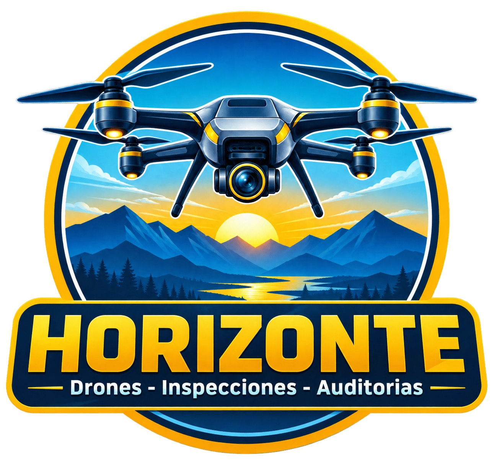
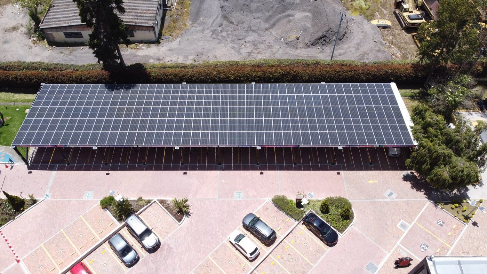
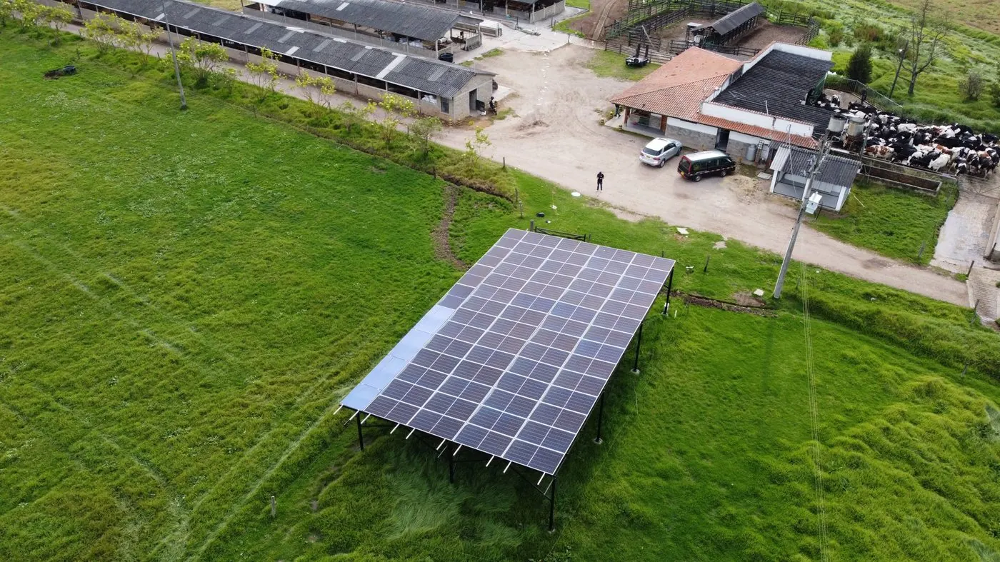
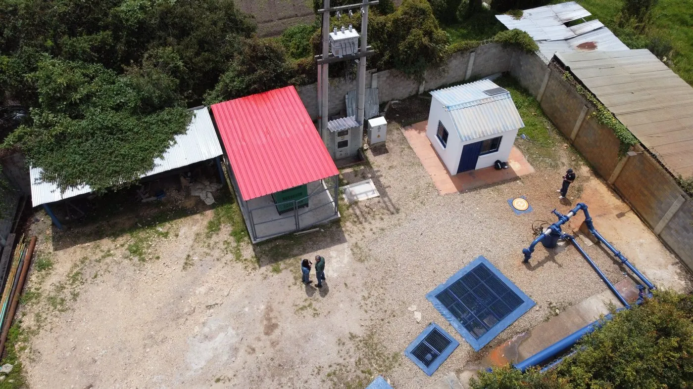
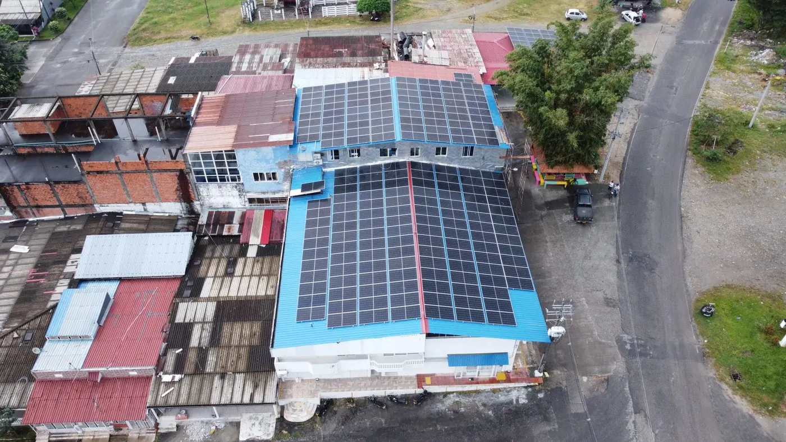

Visitas lentas o incompletas
El equipo técnico pierde tiempo levantando datos básicos de cubierta, accesos, equipos, sombras y restricciones visibles.


Bogotá y Cundinamarca · Inspecciones aéreas · Soluciones técnicas y agrarias
Problema que resolvemos
Así resolvemos esto en HORIZONTEDrones: conozca nuestro método de inspección.
El equipo técnico pierde tiempo levantando datos básicos de cubierta, accesos, equipos, sombras y restricciones visibles.
Subir a cubiertas industriales sin una lectura previa incrementa riesgos operativos y obliga a repetir inspecciones.
Sin registro fotográfico ordenado ni mediciones confiables, el diseño fotovoltaico avanza con incertidumbre.
Entregables principales
InspectDron estructura la captura aérea como insumo para instaladores, ingenieros y propietarios que necesitan decidir con evidencia.
Documento ejecutivo-técnico con objetivo, alcance, evidencia, hallazgos visuales y recomendaciones para avanzar al diseño.
Fotografías clasificadas por zona, obstáculo, acceso, equipo existente y condición relevante de la cubierta.
Imagen aérea procesada para lectura de cubierta, medición de áreas y revisión del contexto inmediato del proyecto.
Estimación visual y métrica de superficies útiles, zonas restringidas y espacios que requieren validación estructural.
Localización de claraboyas, equipos HVAC, ductos, antenas, bordes, accesos y elementos que afectan el layout solar.
Lectura preliminar de sombras generadas por parapetos, equipos, árboles, edificaciones cercanas y cambios de nivel.
Carpetas listas para el equipo de ingeniería: fotografías, ortofoto, insumos de medición y resumen de hallazgos.
Líneas de servicio
Más allá de inspecciones solares, ofrecemos servicios técnicos para agricultura e industria ganadera.
Levantamientos aéreos y análisis técnico para optimizar operaciones ganaderas con información de precisión.
Mapeo aéreo y recomendaciones técnicas para optimizar la división de terrenos según topografía y drenaje.
Evaluación visual y topográfica de drenaje, flujos de agua y disponibilidad de recursos hídricos en predios.
Inspección y seguimiento aéreo de cultivos florales con análisis técnico para optimización de producción.
Método HORIZONTEDrones
Cada paso alimenta los entregables principales del proyecto. Vea el resultado aplicado en casos reales.
Se define si la inspección apoyará prefactibilidad, diseño preliminar, cotización, mantenimiento o validación de cubierta.
Se delimita el área, puntos críticos, seguridad operativa, condiciones de luz y rutas de inspección.
Se capturan fotografías técnicas y secuencias aéreas para lectura de área, obstáculos, accesos y contexto.
Se organizan imágenes, se genera la ortofoto y se consolidan mediciones y hallazgos visuales.
El cliente recibe el Dossier Técnico HORIZONTEDrones y archivos digitales para su equipo de ingeniería.
Casos reales
style="display: none;">La sección queda preparada para crecer con más proyectos, manteniendo una estructura útil para clientes corporativos.

Zipaquirá · Cubierta industrial

Cota · Predio operativo

San Jerónimo · Agroindustria
Por qué nos eligen
Revise nuestros casos reales o solicite una inspección
Ventajas
El equipo recibe una lectura previa para enfocar la visita presencial donde sí agrega valor.
La inspección aérea reduce recorridos innecesarios y ayuda a planear accesos más seguros.
La información queda clasificada para ingeniería, ventas técnicas, mantenimiento y cliente final.
Áreas, obstáculos y sombras visibles se convierten en insumos para dimensionamiento preliminar.
Preguntas frecuentes
No. HORIZONTEDrones entrega información técnica de campo para apoyar a empresas instaladoras, ingenieros y propietarios antes del diseño o la visita especializada.
No. La ortofoto y el registro visual ayudan a tomar decisiones preliminares, pero la capacidad estructural debe validarla un profesional competente.
Atendemos principalmente Bogotá, Sabana de Bogotá y Cundinamarca. También se evalúan proyectos en otras regiones según alcance y agenda operativa.
Un Dossier Técnico InspectDron, registro fotográfico técnico, ortofoto georreferenciada cuando aplica, mediciones de áreas, identificación de obstáculos, evaluación visual d[...]
Contacto
Comparta ubicación, tipo de cubierta, objetivo del proyecto y etapa actual. Responderemos con el alcance recomendado para su inspección.
Bogotá, Sabana de Bogotá y Cundinamarca. Proyectos fuera de la región sujetos a alcance operativo.
Ver zona en mapa